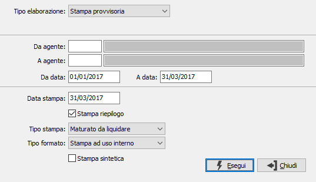
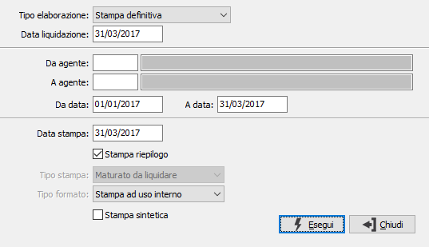
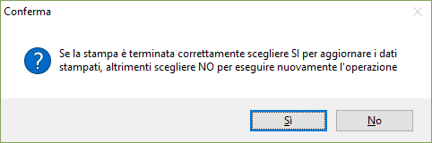

Stampa estratto conto
La procedura viene utilizzata sia per la stampa degli estratti conto, sia per effettuare la liquidazione delle provvigioni.
Un'estratto conto può essere stampato per uso interno, oppure per essere inviato all'agente, anche su carta intestata e con diversi contenuti in relazione al tipo di stampa utilizzato.
Il campo "Tipo elaborazione" determina se aggiornare i dati sulle provvigioni; l'elaborazione provvisoria consente di effettuare la normale stampa degli estratti conto senza effettuare alcun aggiornamento; l'elaborazione definitiva effettua la liquidazione delle provvigioni ed aggiorna la data liquidazione su ogni record di provvigioni stampato.
Tipo elaborazione provvisoria

DA AGENTE: codice dell'agente da cui si intende iniziare la selezione di stampa; confermando a vuoto la selezione inizia dal primo codice valido. Sul campo sono attive le funzioni di ricerca (F9).
A AGENTE: codice dell'agente con cui si intende concludere la selezione di stampa; confermando a vuoto la selezione termina con l’ultimo codice valido. Sul campo sono attive le funzioni di ricerca (F9).
DA DATA: eventuale data da cui deve iniziare l’analisi dei documenti relativamente ai precedenti parametri di selezione. Confermando a vuoto, l’analisi inizia con il primo documento valido.
A DATA: eventuale data con cui si desidera terminare l’analisi dei documenti relativamente ai precedenti parametri di selezione. Confermando a vuoto, l’analisi si conclude con l'ultimo documento valido.
DATA STAMPA: indica la data in cui viene effettuata la stampa, viene proposta la data di sistema.
STAMPA RIEPILOGO: definisce se stampare la pagina di riepilogo dei valori per divisa (casella con segno di spunta).
TIPO STAMPA: definisce il tipo di estratto conto da stampare. Valori possibili:
Completo: riporta tutte le provvigioni nei limiti richiesti.
Da liquidare: riporta solo le provvigioni da liquidare nei limiti richiesti.
Maturato da liquidare: riporta solo le provvigioni maturate, per cui è stato effettuato l'incasso o il pagamento, nei limiti richiesti.
Liquidato: riporta solo le provvigioni liquidate nei limiti richiesti.
Fatturato nel periodo: riporta le provvigioni per i documenti emessi nei limiti richiesti.
Da liquidare (data documento): riporta solo le provvigioni da liquidare per i documenti emessi nei limiti richiesti.
Fatturato nel periodo (analitico): riporta le provvigioni per i documenti emessi nei limiti richiesti riportando le singole righe del documento.
TIPO FORMATO: definisce il formato di stampa da utilizzare; valori possibili: stampa ad uso interno, stampa ad uso esterno su carta bianca, stampa ad uso esterno su carta intestata.
STAMPA SINTETICA: definisce se stampare un solo rigo per documento (casella con segno di spunta), oppure stampare tutti i movimenti del documento (casella vuota).
Tipo elaborazione definitiva

DATA LIQUIDAZIONE: indica la data in cui viene effettuata la liquidazione; il campo è obbligatorio e viene memorizzato sulle provvigioni che saranno stampate.
DA AGENTE: codice dell'agente da cui si intende iniziare la selezione di stampa; confermando a vuoto la selezione inizia dal primo codice valido. Sul campo sono attive le funzioni di ricerca (F9).
A AGENTE: codice dell'agente con cui si intende concludere la selezione di stampa; confermando a vuoto la selezione termina con l’ultimo codice valido. Sul campo sono attive le funzioni di ricerca (F9).
DA DATA: eventuale data da cui deve iniziare l’analisi dei documenti relativamente ai precedenti parametri di selezione. Confermando a vuoto, l’analisi inizia con il primo documento valido.
A DATA: eventuale data con cui si desidera terminare l’analisi dei documenti relativamente ai precedenti parametri di selezione. Confermando a vuoto, l’analisi si conclude con l'ultimo documento valido.
DATA STAMPA: indica la data in cui viene effettuata la stampa, viene proposta la data di sistema.
STAMPA RIEPILOGO: definisce se stampare la pagina di riepilogo dei valori per divisa (casella con segno di spunta).
TIPO FORMATO: definisce il formato di stampa da utilizzare; valori possibili: stampa ad uso interno, stampa ad uso esterno su carta bianca, stampa ad uso esterno su carta intestata.
STAMPA SINTETICA: definisce se stampare un solo rigo per documento (casella con segno di spunta), oppure stampare tutti i movimenti del documento (casella vuota).

In caso di elaborazione definitiva, al termine della stampa viene visualizzato il messaggio illustrato a lato. Ciò per ovviare ad eventuali errori che si potrebbero verificare in fase di stampa, quali il blocco della carta oppure l'errata esecuzione della procedura stessa.Se la stampa si è conclusa positivamente, è comunque necessario confermare premendo il bottone Si.